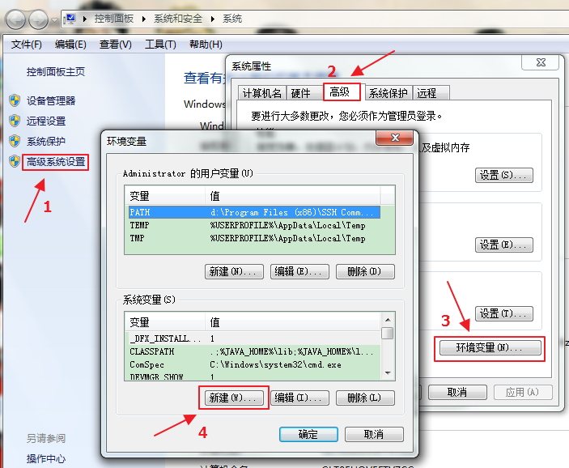
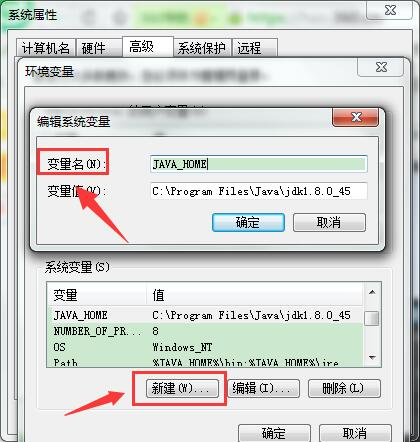
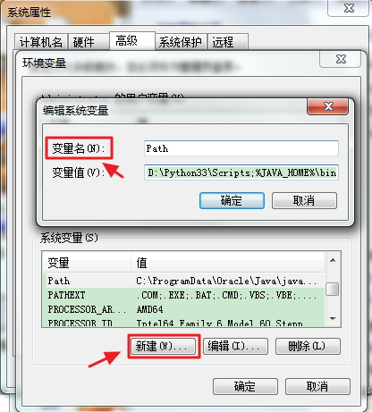
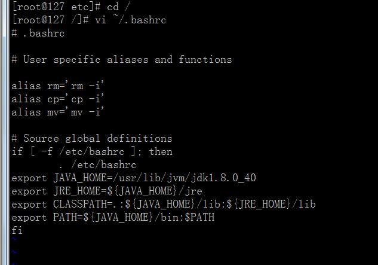

<link rel="import" href="../bower_components/polymer/polymer.html">
<link rel="import" href="../bower_components/polymer-bootstrap/polymer-bootstrap.html">
<link rel="import" href="../bower_components/iron-media-query/iron-media-query.html">
<!-- <link rel="import" href="../bower_components/iron-swipeable-pages/iron-swipeable-pages.html"> -->

<dom-module id="sameview-javaVariable">
  <link rel="import" type="css" href="../css/animate.min.css">
  <link rel="import" type="css" href="../css/page.css">
  <link rel="import" type="css" href="../css/style.css">
  <template>
    <style include="polymer-bootstrap">
    a:focus,a:hover{
      text-decoration: none;
    }
    </style>
      <iron-media-query query="max-width: 768px" query-matches="{{_smallScreen}}"></iron-media-query>
    <app-route
        route="[[route]]"
        pattern="/:category"
        data="{{_routeData}}">
    </app-route>
    <div class="" fade-in$="[[!loading]]" hidden$="[[failure]]">
    <div class="int_content">
      <div class="quotebg">
        <template is="dom-if" if="![[_smallScreen]]">
          <div class="quoteImg" style="background-image:url(../images/introduction.jpg);"></div>
        </template>
      </div>
    <div class="container">

    <div class="java_content">
      <div class="col-md-3">
      </div>

      <div class="col-md-9">
        <center><h3><strong>添加JAVA环境变量</strong></h3></center>
        <div class="panel panel-default">
          <div class="panel-heading">如何添加JAVA环境变量</div>
            <div class="panel-body">
              <p>安装完JDK后，请记得配置JAVA环境变量，具体操作如下：</p>
              <p><strong>一、WINDOWS系统：</strong></p>
              <p>1.右击“我的电脑”-“属性”-“高级系统设置”-“环境变量”添加2项属性，JAVA_HOME,PATH,若已存在则点击“编辑”，不存在则点击“新建”即可。</p>
              <p align="center"></p>
              <br>
              <p>2.添加“系统变量”：JAVA_HOME=JAVA安装目录；</p>
              <p align="center"></p>
              <br>
              <p>3.添加“系统变量”：PATH项下添加：  ;%JAVA_HOME%\bin  ，追加到所有变量最后面即可。</p>
              <p align="center"></p>
              <br>
              <p><strong>二、LINUX系统：</strong></p>
              <p>vi ~/.bashrc</p>
              <p>添加环境变量：</p>
              <p>export JAVA_HOME=/usr/lib/jvm/jdk1.8.0_40 </p>
              <p>export JRE_HOME=${JAVA_HOME}/jre</p>
              <p>export CLASSPATH=.:${JAVA_HOME}/lib:${JRE_HOME}/lib</p>
              <p>export PATH=${JAVA_HOME}/bin:$PATH</p>
              <p>保存退出，输入以下命令使之立即生效。</p>
              <p>source ~/.bashrc</p>
              <p align="center"></p>
              <br>
              </div>
            </div>
          </div>
        </div>
      </div>
      </div>

  </div>
</template>
<script>
  Polymer({
    is: 'sameview-javaVariable',
     ready: function(){
       var win = $(window);
       $(window).resize(function(){
         this.winwidth = win.width();//屏幕的宽  .width()
         this.winheight = win.innerHeight()-1;//屏幕的高
         var bgHeight = this.winheight;
        //  $(this.$.bg).height(bgHeight);
       });
       this.winheight = win.innerHeight()-1;//屏幕的高
       this.winwidth = win.width();//屏幕的宽  .width()
       var bgHeight = this.winheight;
      //  $(this.$.bg).height(bgHeight);
     },


  });

</script>

</dom-module>
